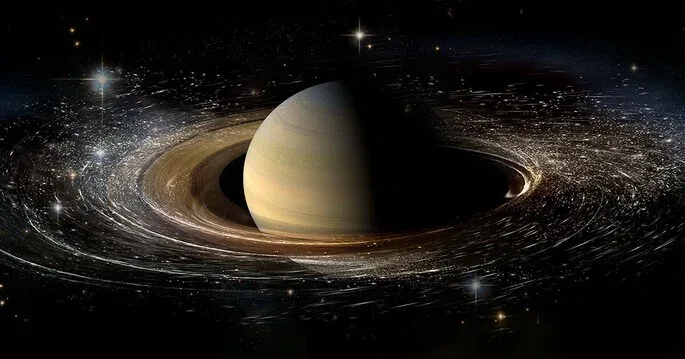
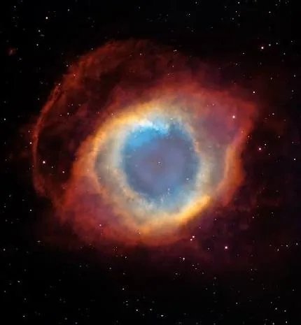
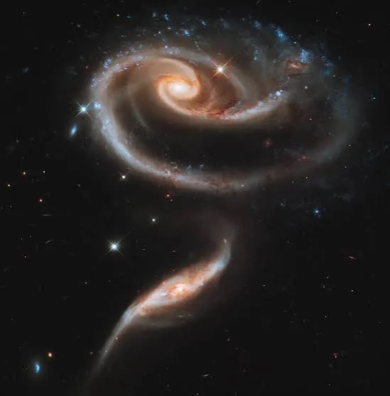

Sistema Solar
Nosso sistema planetário é formado pelo Sol, oito planetas principais, luas, asteroides e cometas. Saturno se destaca pelo sistema extenso de anéis compostos principalmente por gelo e poeira cósmica.

Nebulosas
Nebulosas são grandes nuvens de gás e poeira interestelar. Muitas funcionam como berçários estelares, onde novas estrelas nascem a partir do colapso gravitacional do material cósmico.

Galáxias
Galáxias reúnem bilhões de estrelas, sistemas planetários, gás e matéria escura mantidos juntos pela gravidade. As galáxias espirais apresentam braços curvos ricos em estrelas jovens e regiões de formação estelar.

Continue explorando
Veja mais informações sobre a proposta e o conteúdo do site na página Sobre o projeto.